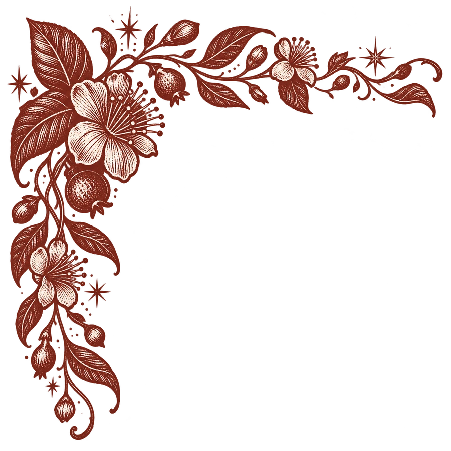
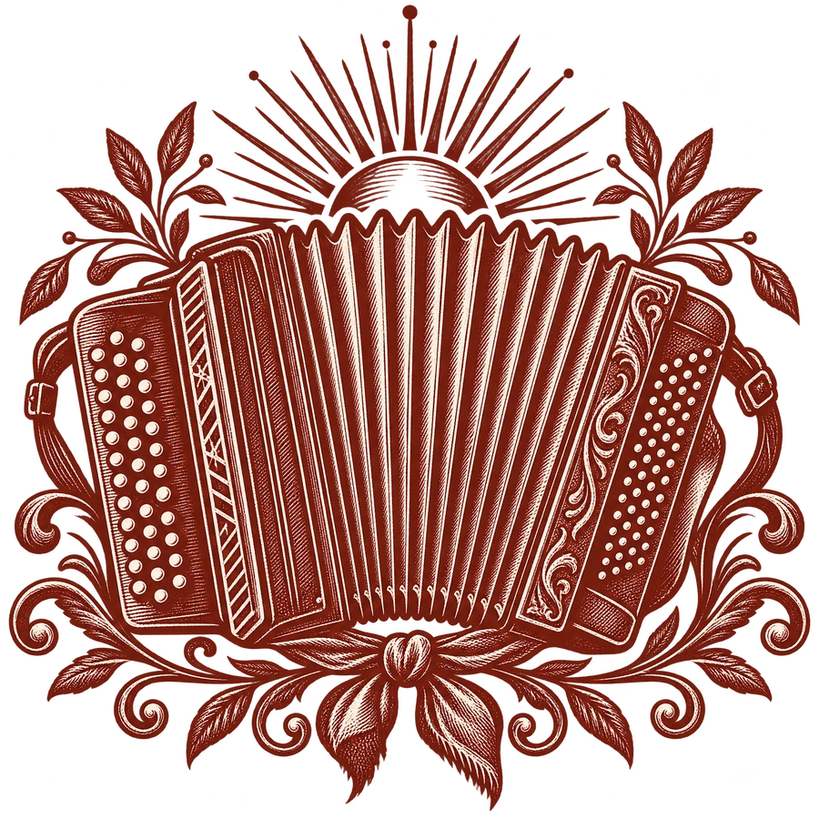

◉ PUXA O SOMCORDIONA FANDANGUEIRA
Ver mais no YouTube ↗GRANDE BAILE✳MÚSICA GAÚCHA AO VIVO
Cordiona Fandangueira apresenta
Chamou
a gaita?
É baile.
Da primeira vaneira ao último acorde — um show feito pra levantar o salão.
RIO GRANDE DO SULBAILE, FESTA & TRADIÇÃO


✳AO VIVO
COM A CORDIONA
COM A CORDIONA
GAITA✳BAILE✳ESTRADA✳FESTA✳GAITA✳BAILE
01PRÓXIMOS ENCONTROSONDE O BAILE ACONTECE
Baile bom se espalha
A próxima
parada?
A agenda da estrada está em atualização. Em breve, novos encontros, salões e cidades por aqui.
Quer ver a Cordiona na tua cidade? ↗▦ AGENDA DA BANDARS · BR
✳✳

PREPARA A PILCHA
Tem baile
se armando.
Novas datas serão anunciadas por aqui.
Perguntar sobre uma data →CORDIONA FANDANGUEIRAATÉ LÁ, VAI ENSAIANDO O PASSO
02SEM ENSAIO PRA FICAR PARADOSOM & IMAGEM
Bateu a saudade?
REGISTROAO VIVO
✳
03DA NOSSA TERRA, PRO TEU SALÃO
A Cordiona é
Gaita no peito.
Baile no sangue.
Música gaúcha ao vivo, feita pra juntar gente, puxar a dança e deixar história boa pra contar depois. O resto? É só abrir espaço no salão.
CORDIONA
FANDANGUEIRA
✳ RS ✳
FANDANGUEIRA
✳ RS ✳
04PRA FAZER O SALÃO TREMERA ESTRUTURA DO SHOW
Todo mundo
no compasso.
Som, instrumentos, equipe técnica e estrada — cada baile pede seu ajuste.
Som & ferragens
O peso do palco, na medida do salão.
01Instrumentos
O timbre que puxa a dança.
02Banda & equipe
Músicos e técnica afinados no mesmo tom.
03Estrada & transporte
A logística se acerta com cada destino.
04Tem um salão esperando
Chama a Cordiona.
Baile, festa, CTG ou encontro da comunidade. A gente conversa sobre a tua cidade.
✳ Fala com a banda ↗